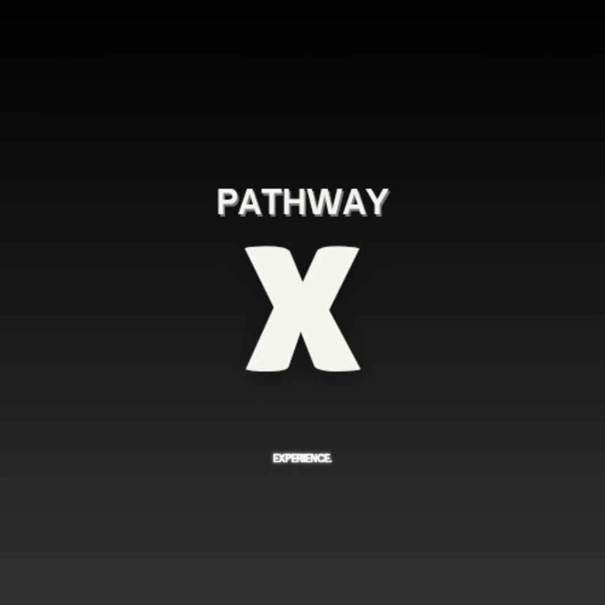

Education and opportunities
Gradify
Gradify supports students with opportunities, resources and educational tools designed to help them grow academically and professionally.
Visit GradifyCommunities
GirlSTEM UK works alongside communities that help students discover events, build skills, access guidance and feel more connected in STEM.
Our network
Our community brings female students together through mentorship, networking, workshops, competitions, public speaking opportunities and peer support.
Partner communities
Education and opportunities
Gradify supports students with opportunities, resources and educational tools designed to help them grow academically and professionally.
Visit Gradify
Pathways and development
Pathway X helps students explore pathways, build confidence and access initiatives that support their next academic and career steps.
Visit Pathway X